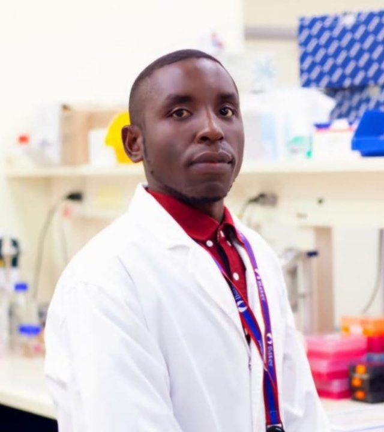

Food Scientist · Lipid Biologist · NGO Founder
Monash University PhD Researcher at the Baker Heart and Diabetes Institute. Tracing lipid metabolism to expose genetic drivers of cardiometabolic disease — one stable isotope at a time.

// 01 — Profile
Simon Aloo earned a Bachelor of Science with First Class Honours in Food Science and Nutrition from Karatina University. As an undergraduate, he was selected for the "Korean Government Program for Young Upcoming African Agricultural Experts" — bringing together 20 outstanding students from across Africa — earning the sole Excellence Award at its conclusion.
Awarded the prestigious GKS-G scholarship in 2019, he pursued Korean language study before joining Kangwon National University, where he earned both his MSc and first PhD in Food Science and Biotechnology — receiving Outstanding Academic Achievement awards for both degrees.
Now at Monash University's School of Translational Medicine, Alfred Hospital, his research applies stable isotope lipid tracers in cultured human cells to decode genetic regulation of lipid metabolism and cardiometabolic disease. He is also the founder of ACMHR-K, a Kenyan NGO dedicated to cardiometabolic health research and advocacy.
Previous Research
Developed probiotic-fermented plant-based foods with therapeutic potential against obesity and obesity-associated neurodegeneration — integrating C. elegans, mouse models, microbiome and metabolomics analyses.
Current Research
Developing and applying stable isotope lipid tracer approaches in individualized cultured human cells to uncover genetic regulation of lipid metabolism, identifying genetic drivers of lipid dysregulation in cardiometabolic diseases.
Community Impact
Founder & Chairperson of ACMHR-K (Alliance for Cardiometabolic Health & Research – Kenya). Also mentors young Africans in pursuing international scholarships and research careers.
// 02 — Academic History
// 03 — Research Output
// 04 — Recognition
// 05 — Funding & Scholarships
// 06 — Scientific Meetings
// 07 — Career
// 08 — Connect
Reach out for research collaborations, mentorship enquiries, or scholarship guidance. Simon is active across these platforms.